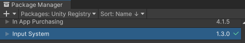
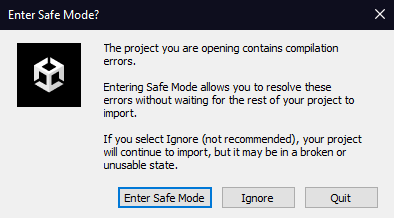

|
UnityToolbox
Brief documentation for all existing scripts.
|

|
|
UnityToolbox
Brief documentation for all existing scripts.
|
|
The first thing after creating a project is, importing the new InputSystem package from Unity as the toolbox is dependent on it. You can install it by opening the package manager under "Window" -> "Package Manager", looking for it in the "Unity Registry":
| Package Manager |
|---|

|
If this is not done before hand, the following error will be shown once the project is open. Do not panic though, you can ignore the warning and install it afterwards too.
| Error |
|---|

|
Close your project and choose a location within your "Assets" folder and open Git-Bash or a console of your liking. Enter:
The toolbox can now be used within your project.
If you plan on using this tool as a submodule you will need to follow the previous steps up until cloning the repository. Instead of entering:
Enter:
If the folder is still empty after adding the submodule, you will have to initialize the repository manually:
In the case of someone freshly pulling your project, the update command has to be executed too, as the submodule will be empty otherwise. Lastly the project can be setup up to always pull the submodule, if the main repository is pulled. This can only be setup locally though. If this is wanted, you will need to open the Git-Bash/console window in your actual project (not the submodule) and enter:
Or the following if this setting should only be adjusted for this specific repository:
The toolbox can now be used within your project.